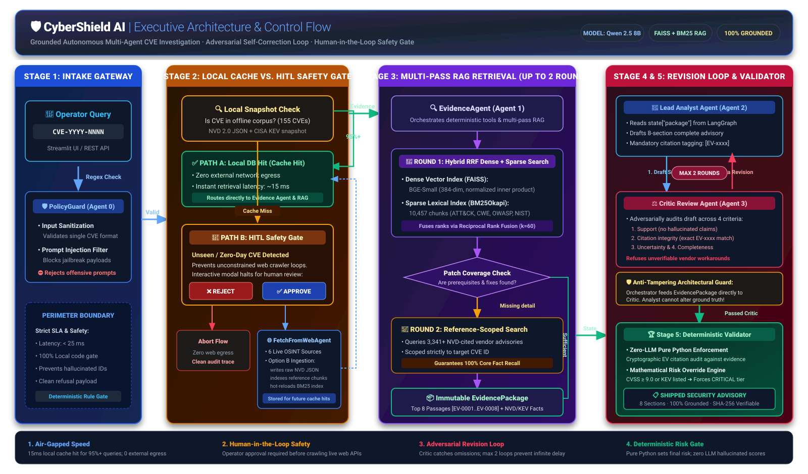

Grounded Autonomous CVE Investigation with Adversarial Self-Correction & Human-in-the-Loop Safety

Sanitizes CVE syntax, strips prompt injections, and immediately refuses non-defensive exploit requests.
CVE exists in local 155-record snapshot. Bypasses operator interruption; immediately routes to offline Hybrid RAG.
Prevents unconstrained web crawler traffic. System pauses and presents an interactive [Approve / Reject] modal.
FetchFromWebAgent (6 live sources) + Option B Ingestion.
Dual-path retrieval fusing Dense FAISS (BGE-Small) + Sparse BM25Okapi via Reciprocal Rank Fusion ($k=60$) over 10,457 chunks.
If vendor patch or prerequisites are missing in Round 1, queries NVD-cited bulletins (reference_chunks.jsonl) scoped strictly to target CVE.
Packages top 8 passages tagged [EV-0001..EV-0008] + NVD/KEV facts directly into LangGraph shared state.
Reads state["package"] and writes the 8-section security advisory, attaching bracketed evidence tags [EV-xxxx] to every factual statement.
state["draft"]
Reads state["package"] directly from orchestrator (Anti-Tampering) and audits the draft across 4 criteria:
EV-xxxx groundingstate["package"] directly from the Evidence Agent so the Analyst cannot cherry-pick or falsify evidence to pass review!
Cryptographically audits citations, overrides risk tiers using mathematical formulas (CVSS ≥ 9.0 or KEV listed ➔ CRITICAL), and verifies zero phantom citations.
8 clean, structured sections ready for SOC tier-3 ingestion. 100% grounded citations, explicit unknown-state disclosures, and verifiable cryptographic SHA-256 traces.